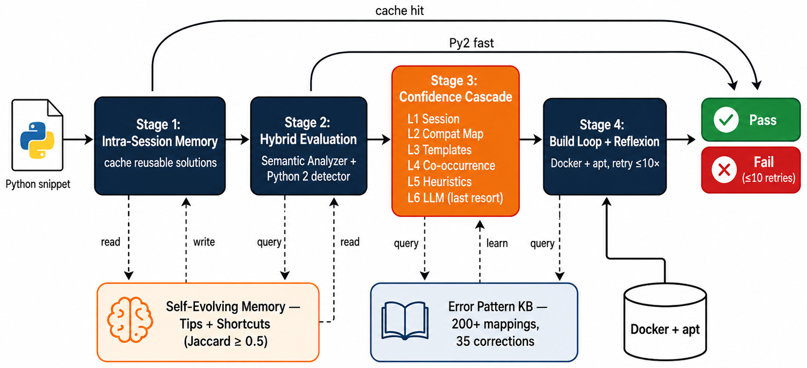
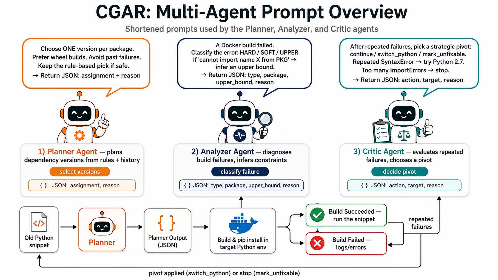
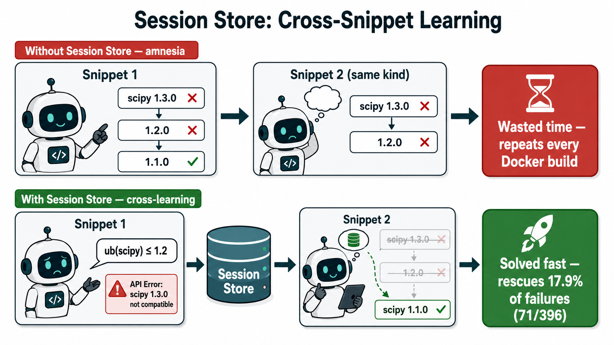

Mục lục
Nội dung chính
01Bối cảnh & phát biểu bài toán
02Công trình liên quan & khoảng trống
03MEMRES: phương pháp nền tảng
04CGAR: đề xuất của nhóm
05Đánh giá thực nghiệm
06Hạn chế & hướng phát triển
+ 8 slide Backup cho Q&A — Filter/Solver I/O · Agent Comm · Session Store · LLM Call · Build Loop · 3 Prompt
Bài toán · 01
Bối cảnh
hồi sinh
→
CGAR · MEMRES
Mục tiêu: tự động dựng lại môi trường chạy được cho mã Python “chết”.
Bài toán · 02
Bài toán & Yêu cầu đánh giá
INPUT
Python snippet (gist cũ) · không metadata, không requirements.txt · Python version chưa biết
→
RESOLVER
dưới ràng buộc
→
OUTPUT
Python version · pip packages (pinned) · apt-get libs (tùy chọn)
Tiêu chí thành công: mọi import chạy được trong Docker — không ImportError / ModuleNotFoundError / SyntaxError
Hard requirements
▶
Mọi thao tác trong Docker
▶
LLM open-source, ≤ 10 GB VRAM
▶
Reference: Gemma-2 9B (Ollama)
Evaluation budget
▶
Docker build timeout 180s; ≤ 10 build/snippet
▶
⇒ trần ≈1800s wall-clock/snippet
▶
Ksolve≤50 (logic, no Docker); 1 worker
Metrics
▶
Pass rate (primary)
▶
Avg time / snippet — đo trong cùng trần ≈1800s
Bài toán · 03
The Dependency Gap
from scipy.misc import imread # bỏ ở scipy ≥ 1.3
import sklearn.cross_validation # bỏ ở sklearn ≥ 0.20
import cv2 # tên PyPI: opencv-python
▶
Tên import gây hiểu lầm: cv2 → opencv-python
▶
API biến mất: imread còn tới scipy ≤ 1.2 (bỏ ở 1.3)
▶
Hiệu ứng domino: scipy ≤ 1.2 → Python ≤ 3.7 → numpy cũ …
cv2
→
imread
→
scipy≤1.2
→
Python≤3.7
Hiệu ứng domino trong Dependency Hell
Không gian tìm kiếm: ~500K package PyPI × chục phiên bản × nhiều bản Python ⇒ bùng nổ tổ hợp.
Bài toán · 04
Bùng nổ tổ hợp: Không gian tìm kiếm khổng lồ
~500K
package PyPI
×
~10
phiên bản / gói
×
~8
runtime Python
=
≈107
tổ hợp
Mò kim đáy bể: 1 tổ hợp đúng giữa ~10⁷ ứng viên
Mỗi import phải khớp đồng thời:
▶
Package — đúng tên pip (cv2 → opencv-python)
▶
Version — 1 trong ~10 bản thư viện
▶
Python — 1 trong ~8 runtime
⇒ Không thể thử hết bằng tay — cần solver / agent để tỉa không gian.
Bài toán · 05
Datasets
HG2.9K: hard subset 2891 gist từ Gistable (Horton & Parnin, ICSME’18). GitChameleon: 328 snippet có unit test, re-frame từ GitChameleon 2.0 (arXiv:2507.12367) để đánh giá tổng quát hóa (OOD).
Công trình liên quan · 06
Related Work: 3 hướng tiếp cận
Khoảng trống: chưa phương pháp nào học từ thất bại để thu hẹp không gian tìm kiếm một cách hệ thống.
Công trình liên quan · 07
Related Work: Tổng hợp các phương pháp
| Method | Venue | Approach | Key limitation |
|---|---|---|---|
| PyEGo | ICSE’22 | KG + SMT | DB stale |
| ReadPyE | TSE’24 | KG + README | DB drift |
| PyDFix | ISSTA’21 | Regex log-parse | Format brittle |
| GPT-4o / o1 | 2024 | Closed LLM | Closed, expensive |
| GPT-4.1 + RAG | 2025 | Closed + RAG | No constraint |
| PLLM | arXiv’25 | Open LLM + RAG | Blind trial-error |
| SMT-LLM | FSE’26 | Z3 + LLM imput. | Static metadata |
■ KG■ Log-parse■ Closed LLM■ Open LLM+RAG
Pass rate HG2.9K (%)
KG ceiling ~47%
PyEGo
ReadPyE
PLLM
2018
2026 →
KG-era chạm trần ~47%; PLLM (LLM paradigm) phá vỡ lên ~55%.
MEMRES · 08
MEMRES: Lookup-First, LLM-Last

4 stage + 2 fast path; 2 memory store phản hồi vào pipeline.
MEMRES = Memory-augmented retry: cứu được nhiều lỗi, nhưng chưa biến thất bại thành ràng buộc logic để tỉa không gian.
MEMRES → CGAR · 09
Từ MEMRES đến CGAR: Vá Đúng 3 Lỗ Hổng
1
✗ 12.8% bí đường
API removed / source-only, build kẹt 3 phút
→
✓ Analyzer Agent
parse log → constraint
2
✗ Chi phí lỗi cao
335s/snippet, ca khó vẫn rất chậm
→
✓ wheel_filter()
chỉ thử bản có wheel
3
✗ Không tỉa không gian
Docker error = blackbox, không thành ràng buộc
→
✓ 3-tier constraints
HARD / SOFT / UPPER
LLM đoán mò — paradigm shift → Multi-Agent + Constraint Acquisition
CGAR · 10
CGAR: Tổng quan 3 Agent

3 LLM agent (Planner / Analyzer / Critic) + Docker build loop — chi tiết prompt ở phần Backup.
CGAR · 11
CGAR: Multi-Agent Loop
Session Store
Constraints C:
● HARD
● SOFT
● UPPER
shared / repo
1 · Planner
LLM
2 · Executor
Tool
build OK?
✓ Done
3 · Analyzer
LLM
4 · Critic
LLM
query_pypi() · wheel_filter()
consult_llm() · solve()
consult_llm() · solve()
build_docker()
run_import()
run_import()
parse_error() · consult_llm()
gen_constraint()
gen_constraint()
analyze_failures() · consult_llm()
suggest_strategy()
suggest_strategy()
filter D
add C
retry
yes
no
stuck?
Build thất bại không phí: mỗi fail → +1 constraint → Planner kế tiếp né cả vùng — điều MEMRES không có.
CGAR · 12
CGAR: Miền giá trị D đến từ đâu? (lọc trực tuyến từ PyPI)
Pipeline lọc — 5 bước · 0 LLM
1
import scipy, numpy — target Python π=3.7
2
import → pip (static map): scipy.misc→scipy
3
GET pypi.org/pypi/<pkg>/json — HTTP, không LLM
4
Lọc mỗi version: requires_python ⊨ π ∧ has_wheel
5
Sort wheel-first, semver↓ → lấy top-8 / gói
PyPI JSON (rút gọn)
1.7.3 → req_py≥3.7, wheel ✓
1.2.3 → req_py py3.7, wheel ✓
… ~60 bản phát hành
Domain D (đầu vào solver)
D(scipy)=[1.7.3, 1.7.2, …] ·8
D(numpy)=[1.21.6, 1.21.5, …] ·8
D(numpy)=[1.21.6, 1.21.5, …] ·8
≈10⁷ toàn cục → ≤8 ứng viên / gói
D = top-8 ứng viên có wheel, hợp π, lọc từ PyPI trực tiếp (reducer xác định, 0 LLM).
CGAR · 13
CGAR: Tích lũy ràng buộc (ví dụ)
from scipy.misc import imread
1
scipy 1.7.3
→
Docker build
→
✗ ImportError: cannot import name imread
↳ Analyzer học:
scipy < 1.3 [UPPER]
2
scipy 1.2.3 (cao nhất <1.3, có wheel)
→
Docker build
→
✓ build OK
SESSION STORE
●scipy < 1.3(UPPER)
Tích lũy + chia sẻ cho snippet sau trong cùng session.
Mỗi build fail → một ràng buộc điển hình → solver thu hẹp miền, hội tụ đúng version mà không thử mù.
CGAR · 14
CGAR: Feedback-Guided Constraint Discovery
Ràng buộc thật ẩn, chỉ lộ qua verifier hộp đen f(A)→{pass, typed-error}. C₀=∅; mỗi lỗi = một counterexample → agent học ràng buộc (Constraint Acquisition, kiểu CEGIS).
Search state St = ⟨X, D, Ct⟩, với Ct lớn dần.
X: package + Python π · D: ứng viên có wheel, hợp π
X: package + Python π · D: ứng viên có wheel, hợp π
Ràng buộc học được Ct (từ counterexample):
HARD — cấm vĩnh viễn version lỗi rõ ràng
SOFT — cấm tạm nếu lỗi ≥ 2 lần
UPPER — vᵢ < ub(Pᵢ), cấm cả khoảng
Vòng lặp: chọn A⊨Ct → build → fail? học Ct+1, re-solve (≤50).
HARD / SOFT / UPPER học từ build, tỉa cây → 1 path khả thi.
CGAR · 15
CGAR: Session-scoped Learning
Session = 1 repository = nhiều snippets: ràng buộc học được chia sẻ giữa các snippet trong cùng session.

Kết quả · 16
Comprehensive Comparison
| Method | Venue | Approach | HG2.9K | GitCham. | Time | Open |
|---|---|---|---|---|---|---|
| PyEGo | ICSE’22 | KG + Z3 SMT | 45.0% | — | 5.8s | — |
| ReadPyE | TSE’24 | KG + README | 47.2% | — | 106.9s | — |
| GPT-4o | 2024 | closed LLM | — | 49.1% | — | ✗ |
| o1 | 2024 | closed (best) | — | 51.2% | — | ✗ |
| GPT-4.1 + RAG | 2025 | closed + RAG | — | 58.5% | — | ✗ |
| PLLM | arXiv’25 | RAG + LLM iter. | 44.8% | 65.5% | 369.6s | ✓ |
| SMT-LLM | FSE’26 | Z3 + LLM imput. | 83.6% | — | 23.9s | ✓ |
| MEMRES | FSE’26 | Memory + Cascade | 86.3% | 81.7% | 335.3s | ✓ |
| CGAR (ours) | — | Multi-Agent + CA | 87.1% | 83.2% | 22.3s | ✓ |
PLLM 44.8% = reproduction single-run (paper headline 54.8% là 10-run union). Time = avg mọi snippet trên HG2.9K. Fairness: ngân sách = ≤10 build × 180s ≈1800s/snippet, giống nhau mọi tool. CGAR chỉ cần ≤5 build → time thấp là do hội tụ nhanh, không phải budget khác.
Kết quả · 17
HG2.9K: Error Breakdown
Số build fail theo loại lỗi
■ PLLM ■ CGAR
494
282
433
372
221
83
83
SyntaxErr
NoMatchDist
ImportErr
Other
NoWheel
AttrErr
Total fails: PLLM 1596 → CGAR 373 Δ −76.6%
Rescue rate theo loại lỗi của PLLM
NameError
97.1%
InvalidRequirement
94.1%
OtherFailure
91.1%
NoMatchingDist
85.8%
ImportError
82.9%
SyntaxError
73.9%
FailedToRun
66.7%
CGAR rescue 80.6% (1286/1596) toàn bộ PLLM failures.
Kết quả · 18
GitChameleon: Open vs Closed
Bảng xếp hạng
| Method | Type | Pass | Open |
|---|---|---|---|
| GPT-4o | closed gen | 49.1% | ✗ |
| Gemini 2.5 Pro | closed gen | 50.0% | ✗ |
| o1 | closed (best) | 51.2% | ✗ |
| GPT-4.1 + RAG | closed + RAG | 58.5% | ✗ |
| PLLM | open + RAG | 65.5% | ✓ |
| MEMRES | open + Memory | 81.7% | ✓ |
| CGAR | open + Agent+CA | 83.2% | ✓ |
Tổng quát hóa chéo benchmark
| Tool | HG2.9K | GitCham. | Gap |
|---|---|---|---|
| PLLM | 44.8% | 65.5% | −20.7pp |
| MEMRES | 86.3% | 81.7% | −4.6pp |
| CGAR | 87.1% | 83.2% | −3.9pp |
Gap nhỏ = tổng quát hóa tốt giữa in-distribution và OOD. (closed baselines từ arXiv 2507.12367)
CGAR (open 9B, <10 GB VRAM) vượt o1 (closed, >200B params) +32.0pp trên GitChameleon — system design > raw model scale.
Kết quả · 19
Speed & Ablation
Duration trên GitChameleon (s)
cùng budget 5 vòng Docker build cho cả 3 tool
67
30
17.8
146
73
48.5
104
47
35.6
Median
P90
Fail-avg
■ PLLM■ MEMRES■ CGAR
Ablation — CGAR rescue (n=396)
Full CGAR
71
w/o session store
56 −21%
w/o wheel filter
40 −44%
w/o upper bound
23 −68%
3 thành phần đều cần thiết; upper bound đóng góp lớn nhất.
“The best build is the one you never run.” Solver tỉa không gian → ít Docker build; fail chỉ chậm hơn pass 1.31× (PLLM 2.20×).
Hạn chế · 20
Hạn chế: Hard Floor & Architectural Limits
Hard floor: 310 snippet (10.7%)
cả PLLM và CGAR đều fail
Python 2 syntax (no Py2 wheel)
41.6%
ImportError system/private pkg
25.8%
NoMatchingDist (pkg absent)
13.3%
CouldNotBuildWheels (glibc/native)
8.1%
API removed (no compat older)
4.0%
Other
7.2%
Irreducible dưới ràng buộc hiện tại (Docker, PyPI public, no source patching, ≤10 retries) — không phải lỗi tool.
Hạn chế kiến trúc
Phụ thuộc PyPI live
PyPI down/rate-limit → fallback về MEMRES cascade.
Single ecosystem
chỉ Python, chưa generalize sang JS / Rust / Go.
LLM Analyzer brittle với log lạ
Gemma-2 9B parse sai khi log ngoài pretrain.
Single-worker session store
chưa hỗ trợ multi-user federated learning.
Hướng phát triển · 21
Hướng phát triển
1
Mở rộng đa ngôn ngữ
Áp dụng CGAR cho npm, cargo, go.mod; bộ giải không phụ thuộc ecosystem, chỉ cần adapter cho từng registry.
2
Chia sẻ constraint
Federated, bảo toàn riêng tư: snippet user A fix giúp user B tránh lỗi tương tự, tận dụng quy mô cộng đồng.
3
Tinh chỉnh LLM đọc lỗi
Fine-tune Gemma-2 trên dữ liệu đọc log chuyên dụng để phân loại đúng lỗi, sinh constraint chính xác hơn.
4
Mở rộng đa mô hình
Chạy CGAR trên nhiều LLM backbone (Qwen3, Phi, Llama…) và các model nhỏ/rẻ hơn, chứng minh độc lập với một model cụ thể.
Mục tiêu dài hạn: từ bộ giải cho Python trở thành “environment archaeologist” đa năng cho mọi ecosystem.
Tham khảo
Tài liệu tham khảo
[1]Horton & Parnin. Gistable: Evaluating the executability of Python code snippets on GitHub. ICSME, 2018.
[2]Ye et al. Knowledge-based environment dependency inference for Python (PyEGo). ICSE, 2022.
[3]Revisiting knowledge-based inference of Python runtime environments (ReadPyE). IEEE TSE, vol. 50, 2024.
[4]Mukherjee et al. Fixing dependency errors for Python build reproducibility (PyDFix). ISSTA, 2021.
[5]Bartlett et al. Raiders of the lost dependency: Fixing dependency conflicts using LLMs (PLLM). arXiv:2501.16191, 2025.
[6]GitChameleon 2.0: Evaluating AI code generation against Python library version incompatibilities. arXiv:2507.12367, 2025.
[7]Shinn et al. Reflexion: Language agents with verbal reinforcement learning. NeurIPS, 2023.
[8]de Moura & Bjørner. Z3: An efficient SMT solver. TACAS, 2008.
[9]SMT-LLM: Z3 SMT + LLM imputation for dependency resolution. FSE-AIWare 2026 competition entry (reproduced).
Backup · B1
Filter & Constraint Solver (I/O)
Filter: CandidateGraphBuilder
Solver: ConstraintSolver
Two Ks: Ksolve=50 logical attempts/solve call (μs) · Kbuild≤10 Docker retries/snippet (180s/build, expensive).
Backup · B2
Agent Communication (Message I/O)
1 · Planner → Executor assignment
{"scipy":"1.7.3","numpy":"1.21.6",
"matplotlib":"3.5.3"}
4 · Store → Planner read, next round
get_upper_bound("scipy","3.7") → "1.3"
get_infeasible_versions(...) → {…}
2 · Executor → Analyzer build result
{"success": False,
"error_type": "ImportError",
"error_log": "cannot import imread…"}
5 · Analyzer → Critic record_failure
{"assignment": {"scipy":"1.7.3",…},
"python_version":"3.7",
"error_type":"ImportError"}
3 · Analyzer → Store write
add_upper_bound("scipy","3.7","1.3")
# imread removed in scipy 1.3
6 · Critic → Orchestrator strategic action
{"action":"switch_python","target":"2.7",
"reason":"repeated SyntaxError"}
Agents không gọi nhau trực tiếp — coordinator (CGARResolver) điều phối; shared ConstraintStore mang tri thức chéo snippet.
Backup · B3
Session Store — Data Structures
Cấu trúc dữ liệu & bộ phân loại
@dataclass
class InfeasibleRecord:
package, version, python_version: str
error_type: ConstraintType # HARD|SOFT
error_signature: str
confidence: float # 1.0 / 0.8
count: int # ++ re-observe
_records: {(pkg,ver,py) → Record}
_combo_records: {(FrozenSet,py) → sig}
_upper_bounds: {(pkg,py) → version}
# regex classifiers
_HARD = ["requires a different Python",
"No matching distribution found"]
_SOFT = ["ImportError","ModuleNotFoundError",
"cannot import name"]
_API_REMOVED_RE =
r"cannot import name '(\w+)' from '…'"
Flow: error log → stored record
log = "ImportError: cannot import
name 'imread' from 'scipy.misc'"
# 1. normalize_error_signature(log)
# strip line-N, 0xADDR, paths
# 2. classify_error(log) → (SOFT, sig)
# 3. _API_REMOVED_RE.search(log)
→ ("imread","scipy.misc")
add_upper_bound("scipy","3.7","1.3")
# 4. Analyzer LLM confirms UB
_records[("scipy","1.7.3","3.7")]
= Record(SOFT, count=1, 0.8)
_upper_bounds[("scipy","3.7")] = "1.3"
Backup · B4
LLM Call Mechanics
HTTP → Ollama Gemma-2 9B (localhost:11434/api/generate)
Request
{"model":"gemma2",
"prompt":"<agent>",
"format":"json",
"options":{
"temperature":0.3,
"num_predict":128}}
Response (Planner)
{"assignment":{
"scipy":"1.2.3",
"numpy":"1.16.6"},
"reason":
"imread needs scipy<1.3"}
Budget & trigger / agent
| Agent | tok | Khi nào call |
|---|---|---|
| Planner | 128 | mỗi plan step |
| Analyzer | 128 | mỗi Docker fail |
| Critic | 96 | ≥3 same-type fails |
Hard limits
▶
HTTP timeout/call 60s · retry 1×
▶
Docker build timeout 180s · retries/snippet ≤10
▶
Empty / parse-fail → rule fallback
Backup · B5
Build Loop & Anti-Hallucination
Build loop (per snippet)
reset per-snippet state, rồi loop ≤10 Docker attempts:
1
Planner → PyPI + Solver + LLM
2
Executor Docker (180s)
✓
pass? on_success(); break
3
else Analyzer ghi HARD/SOFT/UPPER
4
Critic fires nếu ≥3 same-fails
Store persists qua snippet kế cùng session.
Anti-hallucination check
Planner: version ∈ candidate graph → else solver
Analyzer: type ∈ {HARD,SOFT,UPPER} → else discard
Critic: action ∈ {continue, switch_python, mark_unfixable}
JSON parse fail → regex salvage; empty/timeout → rule-only path
Telemetry per agent: llm_consultations · llm_accepted (P) · llm_upper_bounds (A) · llm_overrides (C)
Backup · B6
Planner Agent Prompt
Backup · B7
Analyzer Agent Prompt
Backup · B8